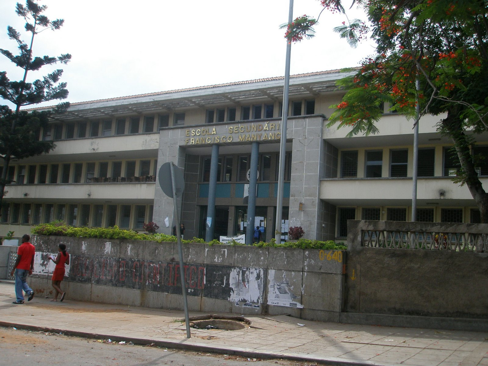

Galeria da Escola
Desde a sua fundação em 1954, a ESFM tem dedicado-se a fornecer ensino de qualidade a jovens ambiciosos, moldando-os em líderes preparados para enfrentar os desafios do mundo em constante mudança.

01
Natureza
Combinando educação e natureza para uma experiência de aprendizado enriquecedora e divertida.

02
Inovação
nossos professores incentivam a criatividade e a inovação, preparando os alunos para os desafios do futuro.

03
Construindo Confiança e Cooperação
As atividades esportivas da nossa escola promovem a saúde, a confiança e o espírito de equipe, ajudando os alunos a desenvolverem habilidades importantes para a vida.